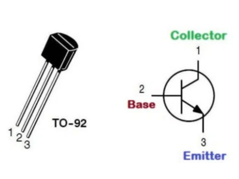

Explora las secciones
Selecciona una sección para ver toda la información del proyecto.
Resumen del proyecto
Este proyecto consiste en un carrito de proximidad controlado por un Arduino Uno. El sistema detecta objetos mediante un sensor ultrasónico y actúa sobre los motores (vía puente H L293D). Además incorpora un circuito para luces intermitentes (indicadores) y código para manejar la lógica de detección y respuesta.
🔧 Materiales utilizados
Explicaciones detalladas
Arduino Uno

Es una placa de microcontrolador de código abierto usada para crear proyectos interactivos. Conecta sensores al mundo físico y ejecuta el software que controla actuadores (motores, LEDs, etc.).
Sensor ultrasónico

Detecta objetos midiendo el tiempo que tarda un pulso sonoro en ir y volver. Útil como detector de proximidad, sin partes mecánicas en contacto.
Puente H L293D

Permite controlar velocidad y dirección de dos motores DC. Es un controlador dual que soporta cargas inductivas. Interfaz sencilla con Arduino: pines de control (IN1..4) y pines de suministro para motores.
Motor de 9V con engrane

Convierte energía eléctrica en rotación; el engranaje disminuye velocidad para aumentar torque, ideal para mover llantas y vencer fricción/cargas del carrito.
Batería de 9V

Fuente compacta para alimentar motores o circuito; cuidado con la corriente y duración al usar motores. Considera usar baterías recargables o pack Li-ion para mayor capacidad si haces pruebas largas.
Cables Dupont

Útiles para prototipos y conexión a placa de pruebas. Soportan típicamente voltajes bajos (3.3–5 V en uso), y corriente limitada (recomendado <1 A por cable en prototipado).
Base de acrílico

Plataforma rígida, ligera y fácil de perforar para sujetar componentes (motores, Arduino, portabaterías).
💡 Materiales para luces intermitentes
Descripción y función del circuito
El circuito de intermitencia usa transistores como conmutadores para encender y apagar grupos de LEDs. Los condensadores y resistencias configuran tiempos (RC) o ayudan a filtrar rizado. Este circuito puede ser simple (multivibrador astable) o controlado desde Arduino para mayor precisión y sincronización con la detección.
LEDs

Diodos emisores de luz eficientes; se usan como indicadores. Siempre conectar con resistencias limitadoras (ej. 220 Ω).
Condensadores

Almacenan energía y la liberan; en un circuito intermitente pueden usarse para formar una red RC que determina el periodo de parpadeo o para estabilizar la alimentación.
Transistores BC547 / BC548
Transistores NPN de propósito general para conmutar cargas pequeñas (LEDs, relés pequeños). Actúan como interruptores controlados por la señal de base (por ejemplo desde una salida digital del Arduino o desde una red RC).
Resistencias 220 Ω y 5k/10k

Las resistencias de 220 Ω limitan corriente de los LEDs. Las resistencias de 5k–10k se usan como pull-down/pull-up o para ajustar tiempos en combinación con condensadores.
Recomendación
Para un control simple y seguro, se puede manejar los LEDs desde pines digitales del Arduino usando transistores como drivers, o implementar un multivibrador externo si se desea independencia del Arduino.
PROGRAMACIÓN
Para la programación del comando usado en el Arduino Uno, se trató lo posible por incluir un código que sea sencillo para que, quien quiera realizar este proyecto no se le dificulte entender cómo hacer cambios si necesita realizarlos.
CONST INT
En Arduino se usa para declarar una variable de tipo entero (int) cuyo valor es constante y no se puede modificar durante la ejecución del programa. Es una buena práctica para definir valores fijos como el número de un pin, ya que el compilador puede detectar errores si se intenta cambiar el valor, como en el ejemplo const int pinLED = 13;

UMBRAL__DISTANCIA
Para usar un umbral de distancia en Arduino, debes leer la distancia de un sensor (como el ultrasónico HC-SR04) y luego usar una declaración if para comparar ese valor con tu umbral. Si la distancia está por debajo del umbral, se ejecuta una acción; si está por encima, se realiza otra acción, lo que te permite activar dispositivos o generar alertas según la proximidad.

SERIAL.BEGIN(9600)
En Arduino inicia la comunicación serial a una velocidad de 9600 bits por segundo (baudios), lo que permite enviar y recibir datos entre la placa Arduino y la computadora a través del Monitor Serial del IDE. Esta velocidad debe coincidir con la configuración del Monitor Serial para que la comunicación sea exitosa.
PINMODE()
En Arduino es una función que configura un pin digital como entrada o como salida. Se declara dentro de la función void setup() y se utiliza con INPUT o OUTPUT.
LONG
En Arduino, long es un tipo de dato entero de 32 bits (4 bytes) que puede almacenar números con signo, desde -2,147,483,648 hasta 2,147,483,647. Se utiliza para almacenar números enteros más grandes que los que puede manejar el tipo int, especialmente en placas que usan int de 16 bits, y también es útil para cálculos donde el resultado puede exceder el rango de int.
FLOAT
En Arduino, float es un tipo de dato que almacena números con decimales (de punto flotante), utilizando 32 bits (4 bytes) de memoria para representar valores entre aproximadamente −3.4×10³⁸ y 3.4×10³⁸. Se usa comúnmente para valores analógicos y continuos porque ofrece mayor precisión que los números enteros. Para declararlo, se utiliza float nombre_variable = valor;
DIGITALWRITE
La función digitalWrite() en Arduino establece un pin digital en estado HIGH (alto) o LOW (bajo). Esta función requiere dos argumentos: el número del pin y el estado deseado (HIGH o LOW), y debe usarse después de que el pin haya sido configurado como salida con la función pinMode(). HIGH equivale a 5V (o 3.3V en placas de 3.3V), mientras que LOW equivale a 0V.
DELAYMICROSECONDS
La función delayMicroseconds() en Arduino se utiliza para pausar la ejecución del programa durante un tiempo especificado en microsegundos. Es similar a delay(), pero ofrece una resolución de tiempo mucho más precisa para retardos muy cortos.
SERIAL.PRINT / SERIAL.PRINTLN
La función Serial.print() en Arduino se utiliza para enviar datos desde la placa Arduino al ordenador a través del puerto serie, y visualizarlos en el Monitor Serie del entorno de desarrollo (IDE) de Arduino.
La función Serial.println() en Arduino se utiliza para enviar datos al ordenador a través del puerto serie y, crucialmente, añadir un salto de línea después de los datos.
IF / ELSE
El condicional if en Arduino (que es C/C++) es una estructura de control fundamental que permite que tu programa tome decisiones. Ejecuta un bloque de código específico solo si se cumple una determinada condición.
El condicional else en Arduino (lenguaje C/C++) se utiliza siempre en combinación con la estructura if. Proporciona una forma de ejecutar un bloque de código alternativo cuando la condición especificada en el if resulta ser falsa.